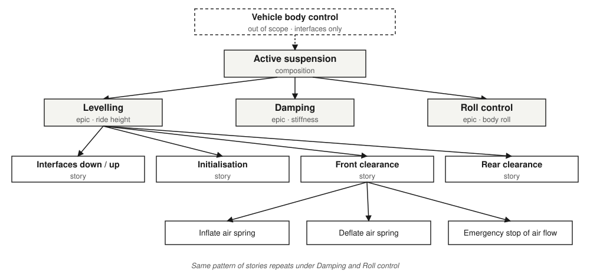
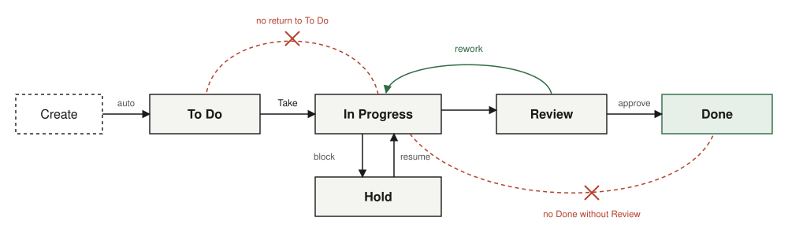

Lehre / Einheit 16 · 11.11.2026
Jira in der Praxis: Workflow, Story Points und Sprint-Kapazität
Was ein Ticket enthalten muss, wann es ohne Iterationen geht, die Zerlegung einer aktiven Federung, ein Workflow ohne Abkürzungen, Story-Point-Abstimmung und ein Sprint bei 80 % Kapazität.
11.11.2026Einheit 16 / 1601:36:23Praktische Einheit
Kurschronologie
Ingenieurnotizen
Was ein Ticket enthalten muss, wann es ohne Iterationen geht, die Zerlegung einer aktiven Federung, ein Workflow ohne Abkürzungen, Story-Point-Abstimmung und ein Sprint bei 80 % Kapazität.
Von Anforderungen zu Tasks
Story Points und Abstimmung
Sprint-Kapazität bis 80 %
Vollständige Unterrichtsnotizen
Vollständige Unterrichtsnotizen
Vollständige deutschsprachige Fachmitschrift auf Grundlage des ukrainischen Transkripts vom 11. November. Die Diagramme stammen von der Redaktion nach den Erklärungen des Dozenten; Namen von Studierenden werden nicht veröffentlicht.
Einheit 16. Jira in der Praxis: Arbeitshierarchie, Workflow, Story Points und Sprint-Kapazität
11. November 2026 · praktische Einheit · 1 Std. 36 Min. Erstellt auf Grundlage des automatischen Transkripts
IgorSikorskyKPI_L11_111126.mp4. Dies ist eine redigierte Lernmitschrift, kein Wortprotokoll: offensichtliche Erkennungsfehler sind korrigiert, Begriffe an frühere Einheiten angeglichen. Namen von Studierenden und Dritten werden nicht veröffentlicht. Das Gespräch über Praktika und Vorstellungsgespräche gibt Meinung und Erfahrung des Dozenten wieder. Redaktionelle Präzisierungen und Diagramme der Redaktion sind gesondert gekennzeichnet.
0. Organisatorisches
- Während der Einheit gab es zwei Alarme; bei Raketengefahr ordnete der Dozent eine 10-minütige Pause an und bat alle in Kyjiw, einen Schutzraum aufzusuchen: „Das ist es nicht wert.“
- Die Einheit setzt Einheit 15 fort: Gestern wurde ein Trello-Board angelegt, heute wird Jira konfiguriert.
1. Wiederholung: was ein Ticket enthalten muss
Eine Erinnerung am Beispiel von Trello (derselbe Anbieter wie Jira und Confluence – Atlassian, „praktisch ein Monopolist bei der Rückverfolgbarkeit von Prozessen und Aufgaben“):
| Feld | Regel |
|---|---|
| Status | To Do, In Progress, Hold, Review, Done – oder andere, je nach Ihrem Arbeitsablauf |
| Titel | Kurz, aber ausreichend, um die Aufgabe zu verstehen |
| Description | Was zu tun ist, welche Ergebnisse erwartet werden und das Abschlusskriterium (Definition of Done); wichtige Hinweise des Autors – „Daten auf der Website“, „die Excel-Tabelle“ |
| Kommentare | Bleiben mit Datum und Uhrzeit in der Historie; das Bearbeiten von Kommentaren lässt sich sperren |
| Assignment | Wem die Aufgabe zugewiesen ist |
| Labels | Eine Kategorie (testing, documentation…) – wie Labels in GitHub, um eine Gruppe von Tickets schnell zu finden |
| Daten | Ein Startdatum ist Pflicht, ein Enddatum erwünscht – bis wann die Aufgabe relevant ist |
| Subtasks / Checkliste | Der Bearbeiter schließt Punkte nacheinander ab – der Fortschritt ist sichtbar |
Ist eine Aufgabe nicht ausführlich beschrieben, macht der Bearbeiter entweder „etwas anderes“, kostet Sie Zeit mit Rückfragen oder sagt: „Sie haben die Aufgabe nicht genug erklärt, deshalb habe ich es so gemacht.“
Regel des Dozenten: Nach jeder Statusänderung (In Progress → Hold, In Progress → Review, Review → Done) einen Kommentar hinterlassen – was geprüft wurde, ob es Anmerkungen gibt. Das ist eine Sicherung: Die Person hat wirklich mit der Aufgabe gearbeitet und sie nicht mechanisch verschoben.
Warum Trello gefährlich ist: Eine Karte lässt sich von In Progress direkt nach Done ziehen, am Review vorbei. Löst der Wechsel nach Done automatisch eine GitHub Action aus, die in main merged, landet ungeprüfter Code im Hauptzweig – eine ernste Fehlerquelle.
2. Kanban und Scrum: was man vor dem Start wissen muss
Scrum ist nicht der Gipfel, sondern eines der Modelle für Teamarbeit. Sein Nachteil ist Redundanz: Die Entwicklung wird mehrfach iterativ durchlaufen und jedes Mal verbessert. Der Dozent formulierte es so: erst, dass es funktioniert, dann, dass es gut funktioniert, dann, dass es schön aussieht. Vier Iterationen kosten mehr Zeit: Man erhält das Produkt später, aber mit weniger Risiken.
Redaktionelle Präzisierung. Diese Abfolge wird meist als „Make it work, make it right, make it fast“ zitiert und Kent Beck zugeschrieben; einen ähnlichen Gedanken formulierte früher schon Brian Kernighan.
Warum nicht immer Kanban, das nach den Worten des Dozenten „schon in der ersten Iteration gut, hochwertig und funktionsfähig liefert“? Weil Kanban, wie er es versteht, eine Voraussetzung hat: Schon vor Projektbeginn muss sehr klar sein, was man baut. Für Forschung, Versuche und Fehler ist kein Platz. Nötig sind:
- Requirements Engineering – ein riesiges Feld: Normen, Leitlinien, Frameworks, sehr klare Kommunikation mit Stakeholdern und Kunden. Ins Projekt kommen Leute, die Prozesse und Normen kennen: Architekten, Technical Writer, Leads.
- Architecture Description – ein großes, streng kontrolliertes Dokument, das das ganze System „auf Papier, im A4-Format“ beschreibt. Es wird mit dem Kunden abgestimmt, der per E-Mail oder Unterschrift bestätigt, dass es vollständig dem entspricht, was er erhalten will.
- Design Descriptions – die Zerlegung der Architektur: jeder Teil des Systems mit Algorithmus, Schnittstellen, Technologien und Testansatz.
- Verteilung auf die Architekten. Der Systemarchitekt übergibt den Fachdomänen-Architekten (Software, Hardware, Mechanik) große Arbeitspakete samt Systemanforderungen. Der Hardware-Architekt „lässt sie durch sich hindurch“ und erstellt Hardware-Anforderungen, die er anschließend in Tasks in Jira zerlegt. Die Tasks decken seine Anforderungen ab, seine Anforderungen die Systemanforderungen.

Dann ist alles vor Arbeitsbeginn festgehalten, und das System ist am besten abgestimmt. Ein Beispiel aus der Praxis des Dozenten: Er war Architekt eines Hardware-Moduls mit eigenen Schnittstellen, während ein anderer Architekt auf Kundenseite die Kabelbäume beschrieb. Wegen mangelnder Kommunikation passten Kabelbaum und Schnittstelle nicht zusammen – einige Millimeter Unterschied. Es musste eilig ein Adapter gebaut werden, und behoben werden konnte das erst in der nächsten Entwicklungsiteration ein halbes Jahr später. „Wir sind nicht Kanban gefolgt: Wir haben nach Scrum gearbeitet, er und ich getrennt, parallel – und bekamen zwei nicht abgestimmte Teile eines Systems.“
Scrum ist für Arbeit, bei der „keiner weiß, wie man es macht“: Es gibt ein grobes Verständnis, aber unklar ist, was im Inneren steckt, welche Methoden und Bibliotheken man nutzt. Man beginnt mit den Schnittstellen, sucht dann die zentrale Bibliothek, verbindet sie mit den Schnittstellen, danach die UI. „Es gibt ein unermessliches Feld zu pflügen: Man nimmt ein Quadrat, pflügt es, es wird klarer – und geht weiter.“
Lässt sich alles vorab beschreiben, liefert Kanban ein hervorragendes System „in einem Zug“. Scheitert man aber auf der Ebene des Systems Engineering, gibt es keine Chance mehr zur Korrektur: „riesige Investitionen unter den Zug geworfen“.
Redaktionelle Präzisierung. Was der Dozent hier Kanban nennt, ist ein plangetriebener Ansatz (Wasserfall, V-Modell): vollständige Spezifikation und Architektur vor dem Start und formale Abstimmung mit dem Kunden – typisch für Projekte nach ISO 26262 oder Automotive SPICE. Ein Kanban-Board wird oft genutzt, um einen solchen Plan auszuführen. In der kanonischen Definition (Kanban Guide) ist Kanban eine Strategie zur Flussoptimierung mit kontrollierter laufender Arbeit; eine vollständige Vorab-Spezifikation verlangt sie nicht. Die Kernaussage der Einheit bleibt: Je besser das System vor dem Start beschrieben ist, desto weniger Iterationen braucht es; je größer die Unsicherheit, desto mehr.
3. Beispiel: aktive Fahrwerksregelung – von der Komposition zu den Tasks
Das durchgehende Beispiel ist eine aktive Fahrzeugfederung, nur der Softwareteil (Hardware und Mechanik sind out of scope).
| Ebene | Im Beispiel |
|---|---|
| Komposition | Aktive Federung |
| Epics (Komponenten) | Levelling – Bodenfreiheit; Damping – Dämpferhärte; Roll control – Wankregelung, damit das Fahrzeug nicht ausbricht |
| Stories | Schnittstellen; Erstinitialisierung; Höhenverstellung vorne und hinten umsetzen |
| Tasks | Luftfeder befüllen; Luft ablassen; Notabschaltung des Luftstroms |
Über der Komposition liegt eine höhere Ebene – die Aufbausteuerung – und darüber die Fahrzeugsteuerung. Diese sind out of scope für das Team: Mit diesen Teams führt man Calls und stimmt die Schnittstellen ab, implementiert für sie aber nichts. Deshalb werden Schnittstellen nach unten (zu den Aktoren) und nach oben (zur übergeordneten Fahrzeugsteuerungssoftware) als eigene Arbeit geführt.


4. Den Jira-Space konfigurieren
Der Dozent legte einen Scrum-Space an – „ein iterativer Ansatz für Software Engineering ist eine richtig gute Sache“ – mit dem Namen Vehicle body control active suspension. Das Board zeigt einen Sprint (ein Zeitintervall für die Bearbeitung von Aufgaben) und ein Backlog (den „Korb“, in dem Aufgaben warten, bis sie in einen Sprint kommen).
Standardmäßig ließen sich nur Stories, Features und Bugs anlegen, deshalb wurde in den Space-Einstellungen Epic ergänzt und die Felder jedes Arbeitstyps konfiguriert:
| Typ | Behaltene Felder | Entfernt, und warum |
|---|---|---|
| Epic | Summary, Description (Pflicht), Assignee (optional – ein Epic kann dem ganzen Team gehören), Start-/Due-Date, Reporter – wer es angelegt hat und verantwortet | Sprint – ein Epic ist abstrakter als ein Sprint; Story Points – sie gehören zu Features, Tasks und Subtasks; Parent – ein Epic über einem Epic sprengt die kanonische Hierarchie |
| Bug | Original estimate (wie lange die Behebung dauert), Assignee, Parent (die Aufgabe, in der der Bug gefunden wurde), Due date, Labels, Team, Start date, Sprint (in welchem Sprint behoben wird), Priority | — |
| Feature / Task | Summary, Description mit Abschlusskriterium, Original estimate, Priority, Assignee, Parent (Epic), Due date, Labels, Team, Start date, Story points, Time tracking | — |
Team ist nötig, weil es mehrere Teams geben kann: eines für Levelling, eines für Damping, eines für Roll control, dazu Tester, DevOps und andere. Eine Aufgabe kann einem ganzen Team zugewiesen werden, und das Team entscheidet, wer sie erledigt.
Time tracking ist bei Time & Material wichtig: Der Kunde will wissen, wofür genau die Zeit verwendet wurde („20 Stunden für dieses Feature“), nicht nur einmal im Monat eine große Rechnung erhalten. In Jira kann man einen Timer starten und stoppen oder Zeit manuell eintragen.
Workflow
Die wichtigste Einstellung ist der Workflow, also welche Wege eine Aufgabe zwischen den Status nehmen darf:
| Übergang | Regel |
|---|---|
| Angelegt → To Do | Automatisch, ohne Bedingungen |
| To Do → In Progress | Nur über die Aktion „Take“ |
| In Progress ↔ Hold | Bei Blockade anhalten; aus Hold nur zurück nach In Progress |
| In Progress → Review | Die Arbeit ist prüfbereit |
| Review → Done | Nur nach dem Review |
| Review → In Progress | Der Reviewer hat ein Problem gefunden – zurück zur Nacharbeit |
| Beliebig → To Do | Verboten: Eine Aufgabe kehrt nie nach To Do zurück |
| Beliebig → Done | Verboten, außer aus Review |


Ein solcher Workflow „ist sicher: Niemand kann das System umgehen“. Er wurde auf alle Arbeitstypen angewendet. Bei Bugs lag es nahe, Hold zu streichen, doch der Dozent behielt ihn: Ohne Hold ist eine Endlosschleife In Progress → Review → In Progress möglich. Gehen die Ideen zur Behebung eines Bugs aus, braucht er einen Ort zum „Ruhen“, statt Zeit mit dem „Kopf gegen die Wand“ zu verbrauchen.
5. Story Points
Kann man sofort sagen, was das Feature Levelling kostet und wie lange es dauert – ein Fahrzeug, das sich während der Fahrt vor einem Waldweg anhebt und auf der Autobahn absenkt? „Ein Jahr, vielleicht zwei, mit zehn Ingenieuren, oder vielleicht zwanzig“ ist Raterei. Niemand bei Verstand schätzt ein ganzes Feature; es wird in kleine Stücke zerlegt.
- Die Schnittstelle zwischen Steuerung und Kompressor: eine Anforderung für einen neuen Druck – praktisch ein Parameter. Der Kompressor kennt seinen aktuellen Druck und entscheidet, ob er befüllt oder ablässt. Das lässt sich schätzen: ein Ingenieur eines bestimmten Niveaus, etwa zwei Tage.
- Den aktuellen Druck messen – „das ist schon schwieriger“. Das Schlüsselwort ist schwieriger: Es geht um relative Größen.
Die einfachste Aufgabe, die sich an Zeit und eine konkrete Person binden ließ, ist 1 Story Point. Kleinere Aufgaben wird es wahrscheinlich nicht geben. Alles andere wird relativ dazu geschätzt:
| Aufgabe im Feature Levelling | Schätzung |
|---|---|
| Schnittstelle zum Kompressor | 1 SP |
| Aktuellen Druck messen | 3 SP (≈ dreimal schwieriger) |
| Druck regeln – ein Regler (P, PI, PID, LQR…) | 6 SP |
| Feature Levelling insgesamt (vereinfacht) | ≈ 10 SP |
Es gibt keine mathematische Formel wie „ein Story Point sind 10 Personenstunden eines Ingenieurs der Klasse X“: Menschen sind verschieden, und „Klassen“ gibt es nicht.
Wie das Team abstimmt
Das ganze Team schätzt, und alle Stimmen sind gleich – die des Dozenten, eines Teamleads oder eines Juniors. In der Einheit gab jeder eine Schätzung für die Aufgabe „Niveaumessung“ ab: von 4 bis 9 SP. Der Mittelwert lag bei 6,25 und wird immer aufgerundet, auf 7 – wegen der Risiken.
Am wertvollsten sind die Extremwerte:
| Extrem | Mögliche Gründe |
|---|---|
| Maximum (9) | Der Ingenieur will mehr Zeit, „um es ruhig angehen zu lassen“ (laut Dozent der häufigste Grund); ein erfahrener Ingenieur hat Ähnliches schon gemacht und weiß, wo Probleme auftauchen; schlicht Unaufmerksamkeit |
| Minimum (4) | Der Ingenieur hat Ähnliches gemacht und kennt einen schnelleren Weg |
Beide Extreme sind „ein Geschenk der Götter“: Entweder man erkennt früh ein Problem, oder man findet jemanden mit Erfahrung und einen schnelleren Lösungsweg. „In einem vernünftigen Geschäft ist kein Platz dafür, das eigene Team anzugehen.“
Redaktionelle Präzisierung. Die Übung ähnelt Planning Poker (James Grenning, 2002; bekannt gemacht von Mike Cohn 2005). Kanonisch decken alle ihre Schätzung gleichzeitig auf, um Ankereffekte zu vermeiden; dann erklären die Urheber der höchsten und niedrigsten Schätzung ihre Überlegungen, und das Team stimmt erneut ab, bis die Schätzungen konvergieren. Verbreitet ist eine fibonacci-ähnliche Skala (1, 2, 3, 5, 8, 13…). Mitteln und Aufrunden ist eine gängige Variante. Die Festlegung „1 SP = 2 Tage“ ist eine lokale Teamvereinbarung für den ersten Sprint; danach wird die Kapazität meist aus der tatsächlichen Velocity früherer Sprints prognostiziert.
6. Prioritäten und Sprint-Kapazität
Prioritäten folgen den Abhängigkeiten. Alles hängt von den Schnittstellen ab, daher haben sie die höchste Priorität. Ohne Messung des aktuellen Niveaus lässt es sich nicht regeln – hoch. Die Niveauabfrage – hoch. Niveauregelung und -änderung werden erst danach möglich.
Kapazitätsberechnung:
| Parameter | Wert |
|---|---|
| 1 Story Point | 2 Arbeitstage eines Ingenieurs (Teamschätzung) |
| Sprint | 2 Wochen = 10 Arbeitstage (immer mit zwei Wochen beginnen; später anpassbar) |
| Ingenieure im Team | 3 |
| Beitrag eines Ingenieurs | 0,5 SP pro Tag × 10 Tage = 5 SP |
| Sprint-Kapazität | 3 × 5 = 15 SP |
Aufgaben werden nach Priorität in den Sprint gezogen: 1 + 7 + 4 = 12 SP. Die nächste Aufgabe ergäbe 16 SP – über der Kapazität –, also wird Sprint 2 angelegt und seinerseits befüllt.
Die „schlaue“ Variante, eine Aufgabe zu teilen, um den ersten Sprint auf 15 aufzufüllen, lehnte der Dozent ab: Eine Aufgabe lässt sich technisch womöglich gar nicht teilen; außerdem kommen während des Sprints neue Aufgaben hinzu, und einen Sprint zu ändern ist „eine Todsünde“.
Warum man einen Sprint nicht überladen darf, besonders den ersten:
- der erste Sprint läuft nie glatt: Bei jemandem sind die Werkzeuge nicht installiert, bei jemandem ist der Rechner nicht angekommen, zwei Ingenieure streiten um den Fensterplatz, jemand sitzt im Zug der Klimaanlage;
- über die „Sprint-Mathematik“ legt sich das Team: Jemand mag jemanden nicht, jemand trinkt Tee statt Kaffee – und die Arbeit wird langsamer;
- der Busfaktor: Jeder kann krank werden oder ausfallen, und seine Aufgaben verteilen sich auf weniger Leute.
Ein Plan mit 15 SP ist also idealistisch. Der Dozent verwies auf SAFe und PMI: einen Sprint bis 80 % der Kapazität auslasten. Den ersten Sprint ließ er bei 12 SP.
Redaktionelle Präzisierung. Der Scrum Guide (2020) besagt, dass während des Sprints keine Änderungen vorgenommen werden, die das Sprint-Ziel gefährden; zugleich kann der Umfang mit dem Product Owner präzisiert und neu verhandelt werden. Die „Todsünde“ sind also Änderungen, die das Sprint-Ziel untergraben, nicht jede Präzisierung. Zu den 80 %: SAFe rät ausdrücklich davon ab, auf 100 % der Kapazität zu planen, und seine normierte Schätzung (8 SP pro Vollzeitperson und zweiwöchiger Iteration) entspricht etwa 80 % der Arbeitszeit. Eine eigene „80 %“-Regel haben wir in Veröffentlichungen des PMI nicht gefunden; es ist eine verbreitete Faustregel.
Nach jedem Sprint folgen eine Retrospektive und die Planung des nächsten: Der Manager sieht, wie der Sprint lief, weist Aufgaben dem neuen zu und justiert den Prozess schrittweise. Ziel ist, dass das Team beliebig lange angenehm arbeiten kann, der Kunde beliebig lange zahlen kann und das Produkt sich so lange wie möglich weiterentwickelt. „Wenn ich das erreiche, bin ich ein guter Manager.“ Das stärkste Instrument ist hier das Feedback des Teams am Ende des Sprints.
7. Abseits des Themas: Praktika und Juniors (Meinung des Dozenten)
Während der Pause im Schutzraum kam das Gespräch auf das Praktikum vor der Abschlussarbeit, das es in der Gruppe laut den Studierenden nicht gibt. Der Dozent hält ein Praktikum in einem Unternehmen für sehr wertvoll:
- eine Abschlussarbeit auf Grundlage realer Ausrüstung, Aufgaben und Unternehmensprozesse ist etwas ganz anderes als ein abstraktes Thema;
- Studierende bringen moderne Ansätze an den Lehrstuhl – ein „nützlicher Stress“ für einen Lehrstuhl, der sonst „im eigenen Saft schmort“;
- vor einem Jahr nahm der Dozent Praktikanten in sein Projekt auf, und sie bewährten sich so gut, dass das Unternehmen sie einstellte.
Ein Student berichtete, dass es viel schwieriger sei, zu einem Vorstellungsgespräch für eine Junior-Stelle eingeladen zu werden als für eine Mid-Level-Stelle. Erklärung des Dozenten: Das ist ein Managementproblem. Ein nichttechnischer Manager fürchtet Juniors – „denen muss man alles erklären“. Ein technisch versierter sieht die Vorteile: Kreativität ohne „Wände“ und die Chance, ein Projekt günstiger mit höherer Marge umzusetzen. Nach Schätzung des Dozenten ist der Gehaltsunterschied so groß, dass ein Monat Arbeit eines Seniors fast einem Jahr Arbeit eines Trainees entspricht. Sein Rat: Finden Sie im Vorstellungsgespräch die Worte, um dieses Argument dem Management zu vermitteln.
Praktische Erkenntnisse
- Ein gutes Ticket: kurzer Titel, Beschreibung mit Abschlusskriterium, Bearbeiter, Labels, Daten, Subtasks.
- Ein Kommentar nach jeder Statusänderung schützt vor mechanischem Verschieben.
- Der Wechsel nach Done ohne Review ist gefährlich, besonders mit automatischem Merge.
- Je vollständiger das System vor dem Start beschrieben ist, desto weniger Iterationen braucht es; bei hoher Unsicherheit Scrum.
- Arbeitshierarchie: Komposition → Epics → Stories → Tasks; Schnittstellen nach oben und unten sind eigene Arbeit.
- Workflow: Done nur über Review, nie zurück nach To Do, Hold schützt vor Endlosschleifen.
- Story Points sind relativ zur einfachsten Aufgabe; das ganze Team stimmt ab, die Extreme werden besprochen.
- Die Sprint-Kapazität ergibt sich aus Team und Sprintlänge; der erste Sprint wird nicht voll ausgelastet.
Fragen zur Selbstkontrolle
- Was gehört in die Beschreibung eines Tickets, und was ist eine Definition of Done?
- Warum nach jeder Statusänderung einen Kommentar hinterlassen?
- Warum ist In Progress → Done zusammen mit einem automatischen Merge gefährlich?
- Was braucht man vor dem Start, um ohne Iterationen zu arbeiten, und worin liegt das Risiko dieses Ansatzes?
- Wie verhalten sich Systemanforderungen zu Hardware-Anforderungen?
- Wie zerlegt man eine aktive Federung in Epics, Stories und Tasks?
- Welche Felder braucht ein Epic, welche ein Bug, und warum?
- Warum wurde Hold im Workflow für Bugs beibehalten?
- Was ist 1 Story Point, und wie werden andere Aufgaben geschätzt?
- Warum wird die mittlere Schätzung aufgerundet, und warum sollte man die Extremwerte besprechen?
- Wie berechnet man die Sprint-Kapazität für 3 Ingenieure, einen 2-Wochen-Sprint und 1 SP = 2 Tage?
- Warum sollte der erste Sprint nicht zu 100 % ausgelastet werden?
Wie es weitergeht (Prognose)
Ein konkretes Thema für die nächste Einheit hat der Dozent nicht angekündigt. Dies ist eine Prognose der Redaktion, keine Ankündigung: Angesichts der Anforderungen der zweiten Leistungsüberprüfung sind wahrscheinlich das Gantt-Diagramm und das Diagramm des Ingenieureinsatzes, die Kostenkalkulation, das Befüllen des Backlogs mit mindestens vier zweiwöchigen Sprints, Zuweisung und Schätzung von Aufgaben sowie GitHub Projects – das dritte in Einheit 15 genannte Werkzeug.
Geprüfte Links
- The Scrum Guide (2020): https://scrumguides.org/scrum-guide.html
- The Kanban Guide: https://kanbanguides.org/english/
- SAFe – „Planning to 100% capacity? Don’t do it!“: https://scaledagile.com/planning-to-100-capacity-dont-do-it/
- SAFe, Iteration Planning: https://framework.scaledagile.com/iteration-planning/
- Make it work, make it right, make it fast (Kent Beck): https://dev.to/weeklydevtips/make-it-work-make-it-right-make-it-fast